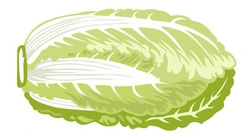

A markdown-driven, build-free blog framework
Without the need to "generate" websites like other static site builder, Napa helps you to be green and healthy.
Without the need to "generate" websites like other static site builder, Napa helps you to be green and healthy.